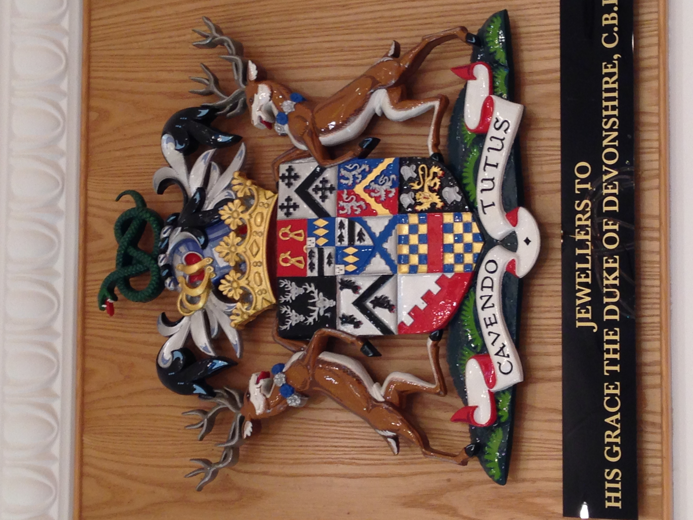
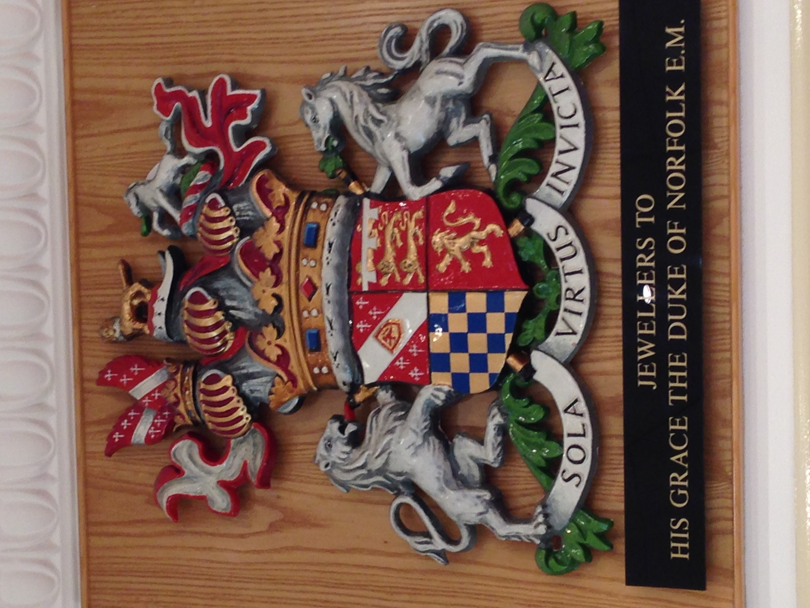

Posted to: The Google+ Heraldry Community
Posted by: Karl Wilcox
Created on: August 1 2015 at 20:23
Spotted in a Jewellery Shop
I found these rather splendid achievements on display in a Jewellery Shop in Sheffield, in the north of England, presumably as Jewellers "By Appointment" to those families - the Duke of Devonshire of course being the head of the Cavendish family resident in the nearby Stately Home of Chatsworth House (of which more in a future post I hope...)
The Cavendish arms are interesting in that as well as being "quarterly of nine" they have an inescutcheon (itself quarterly) which is displaced upwards from its normal position, presumably so as not to completely obscure the central sub-shield ( argent a saltire invected azure
)

